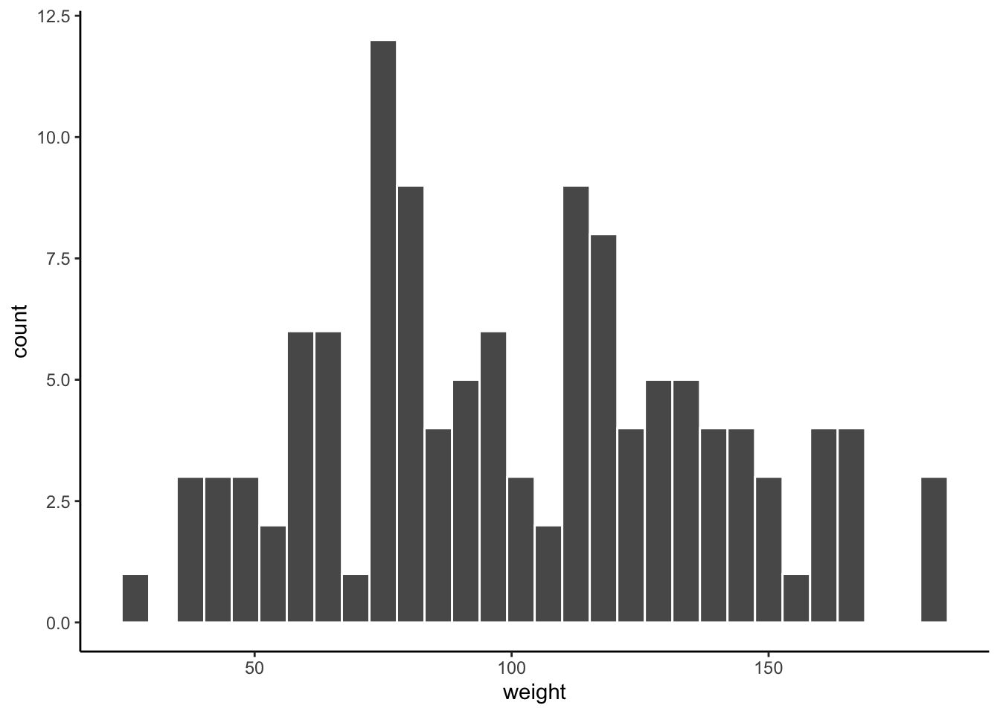
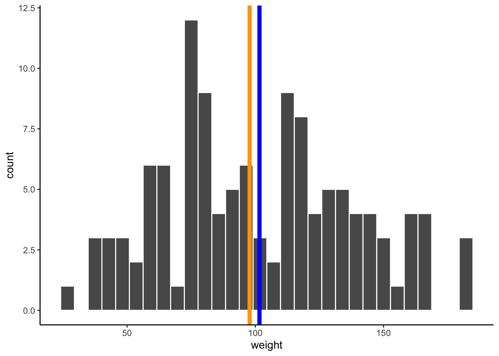
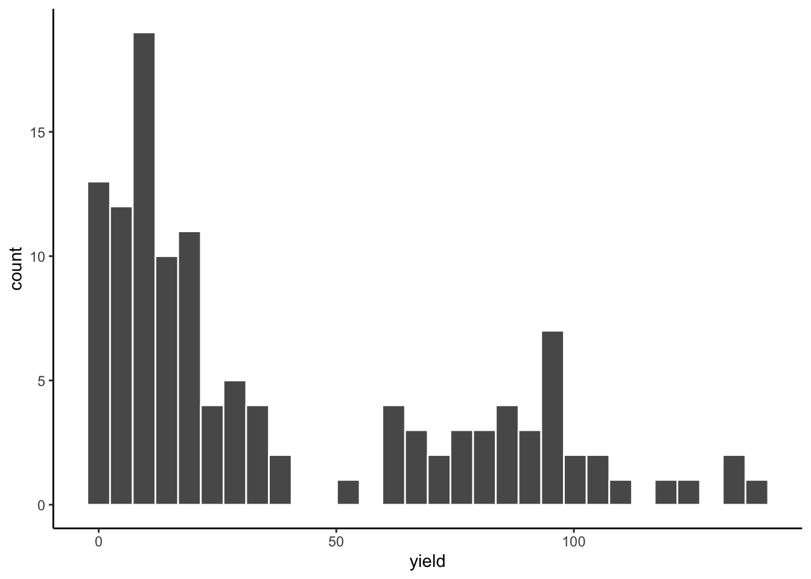
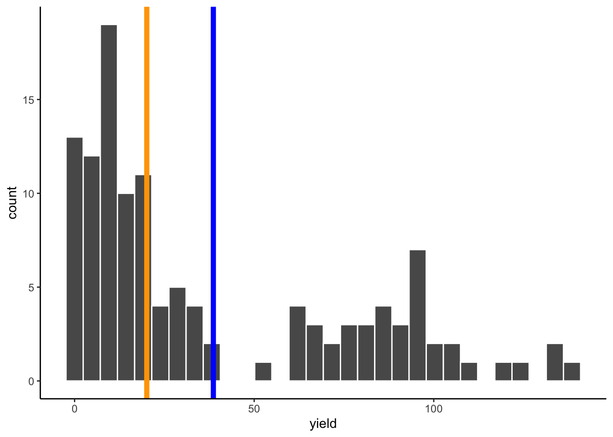
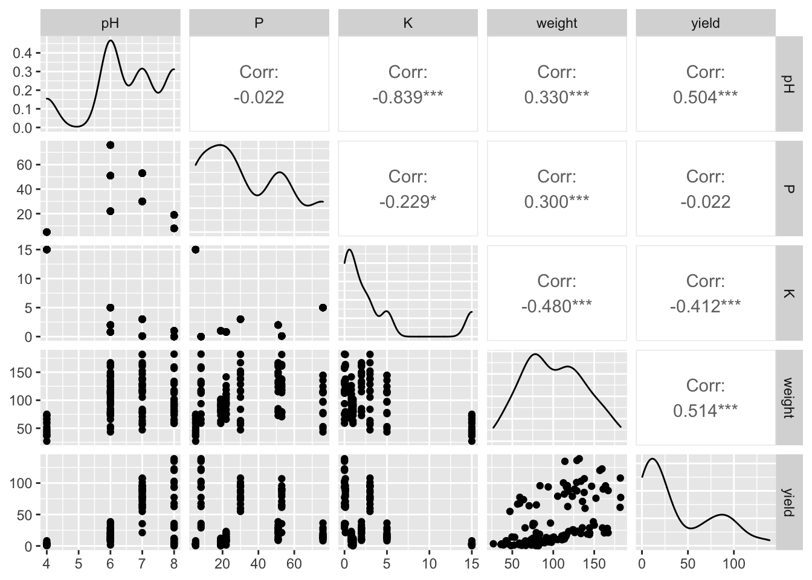
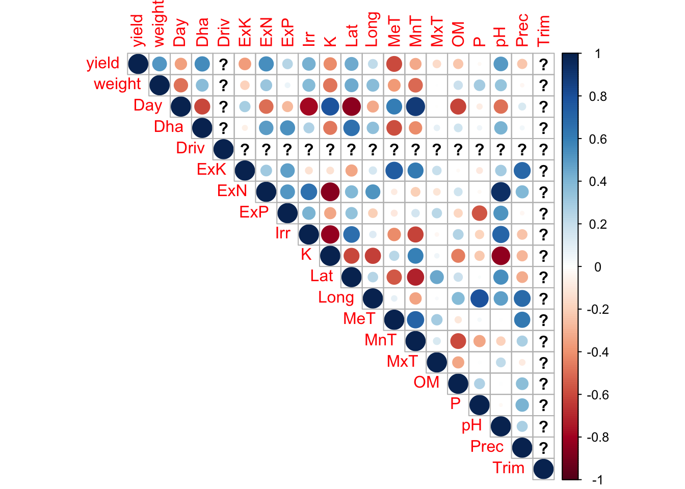
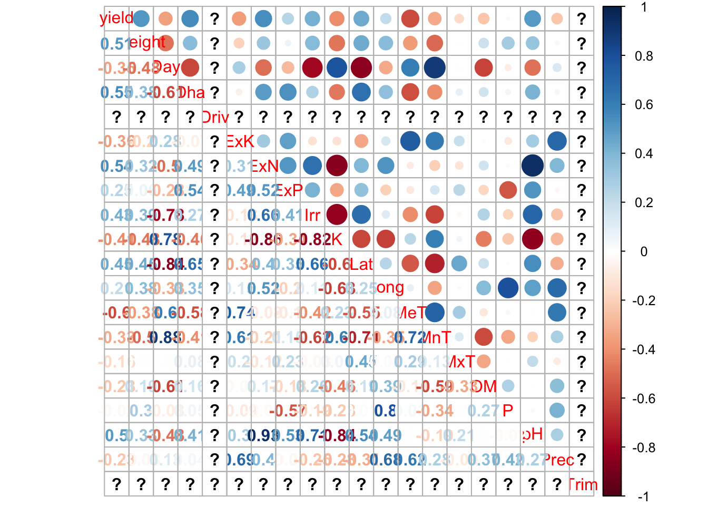
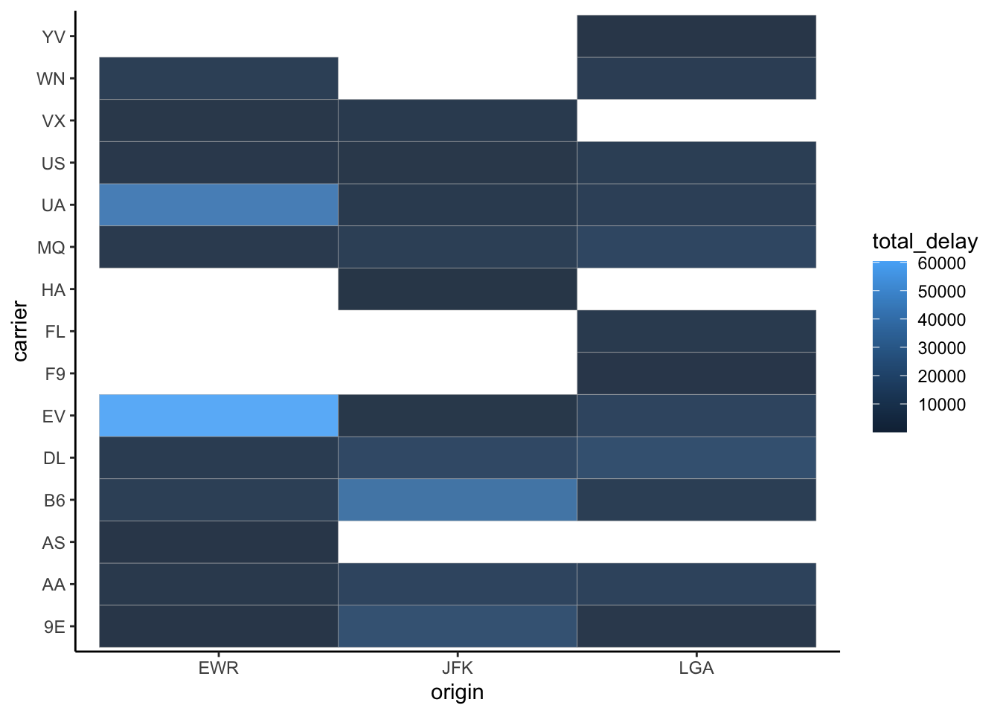
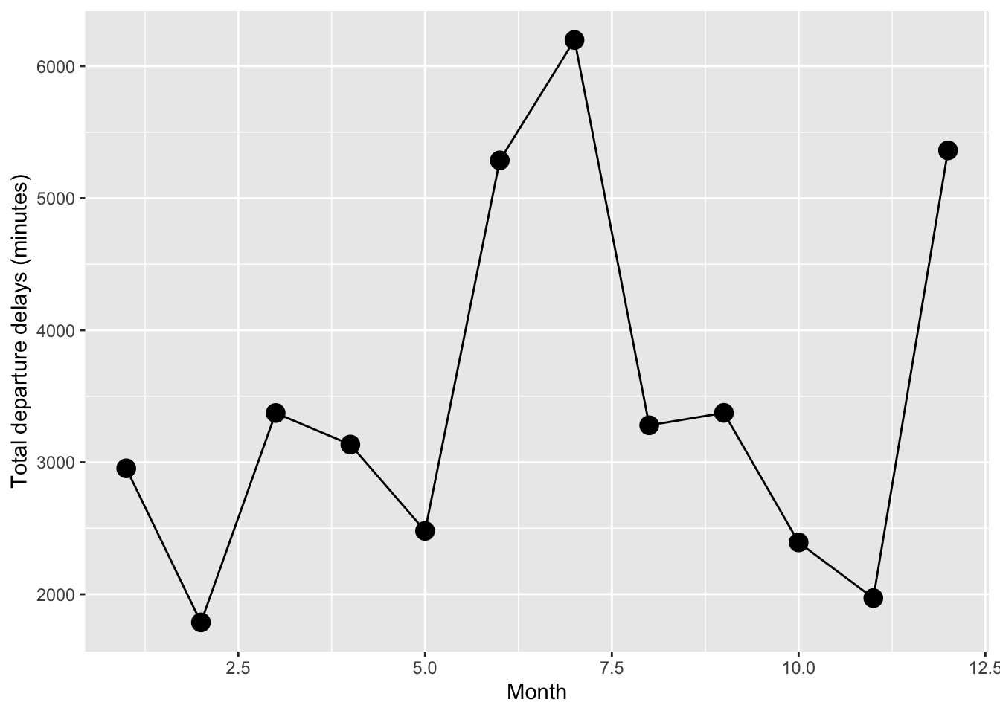

#packages needed to run this
library(tidyverse)
library(agridat)
library(corrplot) #new package
library(EnvStats) #new package
library(nycflights13) #new package
library(GGally) #new packageThis script comes from my lecture on data exploration in R. I try and use open-source data whenever possible. The highlights of this script is to:
Provide the user with an understanding of how to assess their dtata structure (e.g. how many rows, how many columns)
Compare central tendency measures across different types of data distribution
Utilize different packages to quickly assess correlaitons between numeric or continuous variables within a data set
Utilize the tidyverse, to rapidly explore data and patterns with a relatively large dataset
Here we use a dataset on tomota yields from different environments and different genotypes from the package ‘agridat’ . Setup the yield dataset:
data("ortiz.tomato.yield")
data("ortiz.tomato.covs")
yield <- as_tibble(ortiz.tomato.yield)
covs <- as_tibble(ortiz.tomato.covs)
tomato <- full_join(yield,covs, by='env') %>% filter(Driv==0)Reviewing ways to look at structure in the datset:
str(tomato)## tibble [120 × 22] (S3: tbl_df/tbl/data.frame)
## $ env : Factor w/ 18 levels "E04","E05","E06",..: 4 8 9 11 12 13 14 16 4 8 ...
## $ gen : Factor w/ 15 levels "H11","H14","H5",..: 8 8 8 8 8 8 8 8 13 13 ...
## $ yield : num [1:120] 36.4 8.7 18.7 82.5 93.9 15 95.8 3.1 25.6 7.1 ...
## $ weight: num [1:120] 96.6 79.2 83.3 113.5 93.9 ...
## $ Day : int [1:120] 1111 1043 605 970 674 566 765 1463 1111 1043 ...
## $ Dha : int [1:120] 109 91 104 102 133 111 105 91 109 91 ...
## $ Driv : int [1:120] 0 0 0 0 0 0 0 0 0 0 ...
## $ ExK : int [1:120] 131 180 102 100 131 80 25 100 131 180 ...
## $ ExN : int [1:120] 151 180 165 180 200 133 162 100 151 180 ...
## $ ExP : int [1:120] 33 180 102 100 300 127 45 100 33 180 ...
## $ Irr : int [1:120] 0 1 1 1 1 1 1 0 0 1 ...
## $ K : num [1:120] 5 1 0.8 0.1 0 2 3 15 5 1 ...
## $ Lat : num [1:120] 13.4 18.2 18.3 12 33.3 36.3 33.2 2 13.4 18.2 ...
## $ Long : num [1:120] 89.2 70.4 69.2 76.6 70.4 70.4 71.1 48 89.2 70.4 ...
## $ MeT : int [1:120] 25 28 21 20 19 19 19 23 25 28 ...
## $ MnT : int [1:120] 15 19 7 11 13 4 7 22 15 19 ...
## $ MxT : int [1:120] 34 36 30 30 34 36 34 33 34 36 ...
## $ OM : num [1:120] 3 2 5 2 2 3 2 1 3 2 ...
## $ P : int [1:120] 76 19 22 53 8 51 30 5 76 19 ...
## $ pH : int [1:120] 6 8 6 7 8 6 7 4 6 8 ...
## $ Prec : int [1:120] 580 377 314 228 228 19 11 27 580 377 ...
## $ Trim : int [1:120] 0 0 0 0 0 0 0 0 0 0 ...summary(tomato)## env gen yield weight Day
## E07 :15 H11 : 8 Min. : 0.300 Min. : 26.9 Min. : 566.0
## E20 :15 H14 : 8 1st Qu.: 8.775 1st Qu.: 74.9 1st Qu.: 656.8
## E21 :15 H5 : 8 Median : 20.100 Median : 97.8 Median : 867.5
## E40 :15 H6 : 8 Mean : 38.633 Mean :101.6 Mean : 899.6
## E41 :15 H7 : 8 3rd Qu.: 74.175 3rd Qu.:128.8 3rd Qu.:1060.0
## E42 :15 H8 : 8 Max. :138.800 Max. :182.3 Max. :1463.0
## (Other):30 (Other):72
## Dha Driv ExK ExN ExP
## Min. : 91.00 Min. :0 Min. : 25.0 Min. :100.0 Min. : 33.00
## 1st Qu.: 99.25 1st Qu.:0 1st Qu.: 95.0 1st Qu.:146.5 1st Qu.: 86.25
## Median :104.50 Median :0 Median :101.0 Median :163.5 Median :101.00
## Mean :105.75 Mean :0 Mean :106.1 Mean :158.9 Mean :123.38
## 3rd Qu.:109.50 3rd Qu.:0 3rd Qu.:131.0 3rd Qu.:180.0 3rd Qu.:140.25
## Max. :133.00 Max. :0 Max. :180.0 Max. :200.0 Max. :300.00
##
## Irr K Lat Long
## Min. :0.00 Min. : 0.000 Min. : 2.00 Min. :48.00
## 1st Qu.:0.75 1st Qu.: 0.625 1st Qu.:13.05 1st Qu.:70.10
## Median :1.00 Median : 1.500 Median :18.25 Median :70.40
## Mean :0.75 Mean : 3.362 Mean :20.84 Mean :70.66
## 3rd Qu.:1.00 3rd Qu.: 3.500 3rd Qu.:33.23 3rd Qu.:72.47
## Max. :1.00 Max. :15.000 Max. :36.30 Max. :89.20
##
## MeT MnT MxT OM P
## Min. :19.00 Min. : 4.00 Min. :30.00 Min. :1.0 Min. : 5.00
## 1st Qu.:19.00 1st Qu.: 7.00 1st Qu.:32.25 1st Qu.:2.0 1st Qu.:16.25
## Median :20.50 Median :12.00 Median :34.00 Median :2.0 Median :26.00
## Mean :21.75 Mean :12.25 Mean :33.38 Mean :2.5 Mean :33.00
## 3rd Qu.:23.50 3rd Qu.:16.00 3rd Qu.:34.50 3rd Qu.:3.0 3rd Qu.:51.50
## Max. :28.00 Max. :22.00 Max. :36.00 Max. :5.0 Max. :76.00
##
## pH Prec Trim
## Min. :4.00 Min. : 11.0 Min. :0
## 1st Qu.:6.00 1st Qu.: 25.0 1st Qu.:0
## Median :6.50 Median :228.0 Median :0
## Mean :6.50 Mean :223.0 Mean :0
## 3rd Qu.:7.25 3rd Qu.:329.8 3rd Qu.:0
## Max. :8.00 Max. :580.0 Max. :0
## Here we measure and compare how central tendency measures fluctuate between different distributions. We first caclulate the mean, and median. Note we use na.rm=T because we have NAs in the data. When we use this argument R will remove NAs when calculating your metrics
#calculate the mean and median for weight
mean_weight<-mean(tomato$weight, na.rm = T)
median_weight<-median(tomato$weight,na.rm = T)Get a histogram of the distribution of weight:
ggplot(tomato) + geom_histogram(aes(x = weight), color = "white") + theme_classic()## `stat_bin()` using `bins = 30`. Pick better value with `binwidth`.
Looks relatively normally distributed but let’s re-plot but with the mean and the median as vertical lines mean will be colored in blue, median in orange:
ggplot(tomato) +
geom_histogram(aes(x = weight), color = "white") +
geom_vline(aes(xintercept= mean_weight), color = "blue", size = 2)+
geom_vline(aes(xintercept= median_weight), color = "orange", size = 2) +
theme_classic()## `stat_bin()` using `bins = 30`. Pick better value with `binwidth`.
They’re right on top of each other which is characteristic of a normally distributed variable
#calculate the mean and median for yield
mean_yield<-mean(tomato$yield, na.rm = T)
median_yield<-median(tomato$yield,na.rm = T)
mean_yield## [1] 38.6325median_yield## [1] 20.1Get a histogram of the distribution of yield:
ggplot(tomato) +
geom_histogram(aes(x = yield), color = "white") +
theme_classic()## `stat_bin()` using `bins = 30`. Pick better value with `binwidth`.
Looks very right (positive) skewed
Again re-plot with the mean and the median:
ggplot(tomato) +
geom_histogram(aes(x = yield), color = "white") +
geom_vline(aes(xintercept= mean_yield), color = "blue", size = 2)+
geom_vline(aes(xintercept= median_yield), color = "orange", size = 2) +
theme_classic()## `stat_bin()` using `bins = 30`. Pick better value with `binwidth`.
This time there is a spread. Median is less than the mean. The median is actually more closer to the mode of the yield (taller bars) than the mean.
We can first use the GGally package. The ggpairs() code provides us with scatter plots that plot variables against one another in a pairwise fashion. We also see the distribution of the data and the correlation coefficients between a pair of variables
ggpairs(tomato %>% dplyr::select(pH, P, K, weight, yield)) #select only 5 variables #interest
Let’s use the corrplot package to identify which variables are correlated with one another. First we need to make a correlation matrix of the data. Here we calculate a correlation matrix using a pearson’s correlation coefficicent method. Keep in mind that the pearson’s method often assumes nromality between variables which we did not check. Other methods such as spearman’s correlation coefficent can be used for non-normal data.
cor_tomatos<-cor(tomato %>% select(-env,-gen) %>% na.omit(), method = c("pearson"))## Warning in cor(tomato %>% select(-env, -gen) %>% na.omit(), method =
## c("pearson")): the standard deviation is zeroLet’s visualize this matrix better with the corrplot package. This line of code will generate a plot showing the relationships between all variables in pairwise manner using the correlation matrix we made previously. The colors represent the value of the correlation coefficent. Blues indicate positive correlation while reds refelct negative correlations. The size of the circles reflect the correlation coefficient (e.g, bigger circles represent larger correlation coefficeint values).
corrplot(cor_tomatos, method = "circle", type = "upper")
corrplot.mixed(cor_tomatos)
Here we use a dataset named ‘flights’ from the nycflights12 package. This is data showing every flight to come out of three New York Airports in the year 2013 (domestic only). It comes with the main data named ‘flights’ but also comes with extra datasets (or metadata files) names ‘airlines’ and ‘airports’. ‘Airlines’ provides the airline name for each carrier code (e.g. UA is United Airlines) ’Airports provides an airport name for each destination code (MCO is Orlando)
Let’s load up the flights dataset:
data("flights")We see that this dataset is rather large w/ 336,776 rows
str(flights)## tibble [336,776 × 19] (S3: tbl_df/tbl/data.frame)
## $ year : int [1:336776] 2013 2013 2013 2013 2013 2013 2013 2013 2013 2013 ...
## $ month : int [1:336776] 1 1 1 1 1 1 1 1 1 1 ...
## $ day : int [1:336776] 1 1 1 1 1 1 1 1 1 1 ...
## $ dep_time : int [1:336776] 517 533 542 544 554 554 555 557 557 558 ...
## $ sched_dep_time: int [1:336776] 515 529 540 545 600 558 600 600 600 600 ...
## $ dep_delay : num [1:336776] 2 4 2 -1 -6 -4 -5 -3 -3 -2 ...
## $ arr_time : int [1:336776] 830 850 923 1004 812 740 913 709 838 753 ...
## $ sched_arr_time: int [1:336776] 819 830 850 1022 837 728 854 723 846 745 ...
## $ arr_delay : num [1:336776] 11 20 33 -18 -25 12 19 -14 -8 8 ...
## $ carrier : chr [1:336776] "UA" "UA" "AA" "B6" ...
## $ flight : int [1:336776] 1545 1714 1141 725 461 1696 507 5708 79 301 ...
## $ tailnum : chr [1:336776] "N14228" "N24211" "N619AA" "N804JB" ...
## $ origin : chr [1:336776] "EWR" "LGA" "JFK" "JFK" ...
## $ dest : chr [1:336776] "IAH" "IAH" "MIA" "BQN" ...
## $ air_time : num [1:336776] 227 227 160 183 116 150 158 53 140 138 ...
## $ distance : num [1:336776] 1400 1416 1089 1576 762 ...
## $ hour : num [1:336776] 5 5 5 5 6 5 6 6 6 6 ...
## $ minute : num [1:336776] 15 29 40 45 0 58 0 0 0 0 ...
## $ time_hour : POSIXct[1:336776], format: "2013-01-01 05:00:00" "2013-01-01 05:00:00" ...Here are the carrier codes and the corresponding airline names:
data("airlines")
airlines## # A tibble: 16 x 2
## carrier name
## <chr> <chr>
## 1 9E Endeavor Air Inc.
## 2 AA American Airlines Inc.
## 3 AS Alaska Airlines Inc.
## 4 B6 JetBlue Airways
## 5 DL Delta Air Lines Inc.
## 6 EV ExpressJet Airlines Inc.
## 7 F9 Frontier Airlines Inc.
## 8 FL AirTran Airways Corporation
## 9 HA Hawaiian Airlines Inc.
## 10 MQ Envoy Air
## 11 OO SkyWest Airlines Inc.
## 12 UA United Air Lines Inc.
## 13 US US Airways Inc.
## 14 VX Virgin America
## 15 WN Southwest Airlines Co.
## 16 YV Mesa Airlines Inc.The seed allows us to get reproducible results and here’s how we set it:
set.seed(1234) Let’s grab a random subsample to make it easier to work with the sample_n function allows us to randomly sample rows from a dataset. Here we sample just 20,000 rows. Your computer will thank you later when you are plotting these data
ny_flights<-sample_n(flights, 20000)
ny_flights## # A tibble: 20,000 x 19
## year month day dep_time sched_dep_time dep_delay arr_time sched_arr_time
## <int> <int> <int> <int> <int> <dbl> <int> <int>
## 1 2013 6 17 1033 1040 -7 1246 1309
## 2 2013 12 26 1343 1329 14 1658 1624
## 3 2013 8 26 1258 1218 40 1510 1516
## 4 2013 8 17 1558 1600 -2 1835 1849
## 5 2013 2 17 NA 1500 NA NA 1653
## 6 2013 6 30 905 900 5 1200 1206
## 7 2013 9 15 1017 1025 -8 1245 1325
## 8 2013 5 7 1623 1627 -4 1819 1818
## 9 2013 3 14 703 645 18 854 846
## 10 2013 9 4 739 740 -1 1030 1055
## # … with 19,990 more rows, and 11 more variables: arr_delay <dbl>,
## # carrier <chr>, flight <int>, tailnum <chr>, origin <chr>, dest <chr>,
## # air_time <dbl>, distance <dbl>, hour <dbl>, minute <dbl>, time_hour <dttm>Let’s see how many flights total came out of each airport during the year. We can use the n() function to count up the total number of observations. In this case we are counting the total number of observations in each group (origin/airport)/
ny_flights %>%
group_by(origin) %>%
summarise(total_flights = n())## # A tibble: 3 x 2
## origin total_flights
## * <chr> <int>
## 1 EWR 7200
## 2 JFK 6597
## 3 LGA 6203We see that EWR (Newark Liberty Airport has the most outgoing flights). But more importantly it tells us that the flights are more or less evenly distributed between the three airports. No single airport is taking up most of the data.
Let’s see which carriers from which airports had the most amount of flight delays? Note: I filter out negative departure delay times because those represent planes that departed ahead of schedule. Note: I use the na.rm =T argument here because there are NAs in the datset for dep_delay
delayed_planes<-ny_flights %>%
filter(dep_delay > 0) %>%
group_by(origin, carrier) %>%
summarise(total_delay = sum(dep_delay, na.rm = T)) %>%
arrange(desc(total_delay))## `summarise()` has grouped output by 'origin'. You can override using the `.groups` argument.delayed_planes## # A tibble: 33 x 3
## # Groups: origin [3]
## origin carrier total_delay
## <chr> <chr> <dbl>
## 1 EWR EV 60336
## 2 EWR UA 41592
## 3 JFK B6 36854
## 4 JFK 9E 18152
## 5 LGA DL 17338
## 6 JFK DL 12947
## 7 LGA MQ 11738
## 8 LGA EV 10508
## 9 JFK AA 10472
## 10 LGA AA 8977
## # … with 23 more rowsairlines## # A tibble: 16 x 2
## carrier name
## <chr> <chr>
## 1 9E Endeavor Air Inc.
## 2 AA American Airlines Inc.
## 3 AS Alaska Airlines Inc.
## 4 B6 JetBlue Airways
## 5 DL Delta Air Lines Inc.
## 6 EV ExpressJet Airlines Inc.
## 7 F9 Frontier Airlines Inc.
## 8 FL AirTran Airways Corporation
## 9 HA Hawaiian Airlines Inc.
## 10 MQ Envoy Air
## 11 OO SkyWest Airlines Inc.
## 12 UA United Air Lines Inc.
## 13 US US Airways Inc.
## 14 VX Virgin America
## 15 WN Southwest Airlines Co.
## 16 YV Mesa Airlines Inc.Looks like carrier EV (ExpressJet Airlines Inc.) was delayed the most coming out of EWR (Newark Liberty) followed by UA (United Airlines). EV had a total of 60336 delayed minutes which translate to roughly a total delay of 41.9 hours! Keep in mind we are only using 20000 rows here (6 % of the data)!
Let’s plot some of this data. Here we use the geom_tile() in ggplot which is useful for plotting categorical variables on both axes:
ggplot(delayed_planes) +
geom_tile(aes(x = origin, y = carrier, fill = total_delay), alpha = 0.9,color = "Grey") +
theme_classic() 
Let’s finally explore trends over time. More specifically, are there more departure delays in certain months? Let’s focus of United Airlines coming out of Newark because we know it’s one of the more busier airports from our previous code
delay_months<-ny_flights %>%
filter(carrier == "UA", origin == "EWR" , dep_delay>0) %>%
group_by(month) %>%
summarise(delay_min = sum(dep_delay, na.rm = T))
ggplot(data = delay_months) +
geom_line(aes(x = month, y = delay_min)) +
geom_point(aes(x=month, y = delay_min), size = 4) +
labs(x = "Month", y = "Total departure delays (minutes)")
Basically don’t fly on United Airlines out of Newark in July or December!
Final thing. What are the top 5 airlines/carrier in terms of outgoing flight volume from all the airports and where are these airlines primarily flying too? Note: Here we use two chunks of dplyr code. The first identifies the the top 5 airlines the next uses the first chunk to filter for those top 5 using the “%in%” operator
top_airlines<-ny_flights %>%
group_by(carrier) %>%
summarise(total = n()) %>%
arrange(desc(total)) %>% #not arrange(desc()) basically arranges the column (total) in descending order
top_n(n = 5)## Selecting by totaltop_airlines # Here we see the top carriers are UA, B6, EV, DL, AA## # A tibble: 5 x 2
## carrier total
## <chr> <int>
## 1 UA 3522
## 2 B6 3286
## 3 EV 3192
## 4 DL 2856
## 5 AA 1923ny_flights %>%
filter(carrier %in% top_airlines$carrier) %>%
group_by(carrier,dest) %>%
summarise(total= n()) %>%
arrange(desc(total))## `summarise()` has grouped output by 'carrier'. You can override using the `.groups` argument.## # A tibble: 186 x 3
## # Groups: carrier [5]
## carrier dest total
## <chr> <chr> <int>
## 1 DL ATL 629
## 2 UA IAH 446
## 3 AA DFW 422
## 4 AA MIA 416
## 5 B6 FLL 415
## 6 UA ORD 399
## 7 B6 MCO 385
## 8 UA SFO 375
## 9 UA LAX 329
## 10 AA ORD 328
## # … with 176 more rowsLooks like Delta (DL) flew 629 total flights to Atlanta (ATL). Atlanta must be a very popular spot! But why?! This is where data exploration becomes limited. We have no data to support why Atlanta is popular. However thankfully we know that Hartsfield Jackson (Atlanta’s main airport) is a primary hub for Delta Airlines. That’s why the airline tries to keep all their flights moving through ATL. This showcases how powerful data exploration is but how sometimes it can leads to wrong assumptions.
#’For this challenge we will use the flights dataset
#‘Question 1: Two parts. First, which months had the most flights departing each of the three airports? #’ Second, show a line plot of all three airports and the number of flights departing them across #’ every month (Hint: x-axis would be months, y would be the number of flights).
Q1<-ny_flights %>% group_by(month, origin) %>% summarise(total = n()) %>% arrange(desc(total)) %>% ungroup()
ggplot(Q1, aes(x = month, y = total, color = origin,group = origin)) + geom_point(aes(x = month, y = total, color = origin)) + geom_line(aes(x = month, y = total, color = origin)) + theme_bw()
#fancier way of doing this Q1<-ny_flights %>% mutate(month_name = factor(month.name[month], levels = month.name)) %>% group_by(month_name, origin) %>% summarise(total = n()) %>% arrange(desc(total)) %>% ungroup() ggplot(Q1, aes(x = month_name, y = total, color = origin,group = origin)) + geom_point(stat=‘summary’, fun.y=sum) + stat_summary(fun.y=sum, geom=“line”) + labs(x = “Months”, y = " Total Flights") + theme_bw()
#’ Question2: Which airline/carrier flew the most miles, the most number of flights? #’ Also which carrier had the lowest miles to flights ratio? #’ (Lower miles to fligh ratio would mean an airline flew less miles per flight)
ny_flights %>% group_by(carrier) %>% summarise(total_miles = sum(distance) ,total_flight = n()) %>% mutate(Ratio = total_miles/total_flight)
#‘Question 3:Identify the 10 most popular destinations from all three airports. #’Then filter the dataset for these 10 destinations. #’For every month, which destination received the most flights and from which airports? #’ How would you plot this?
top_ten<-ny_flights %>% group_by(dest) %>% summarise(total = n()) %>% arrange(desc(total)) %>% top_n(n = 5) %>% dplyr::select(dest)
where_do_I_go<-ny_flights %>% filter(dest %in% c(“ATL”, “BOS”, “ORD”, “LAX”, “MCO”)) %>% group_by(origin,dest, month) %>% summarise(total = n())
ggplot(where_do_I_go) + geom_point(aes(x = month, y = total, color = origin)) + geom_line(aes(x = month, y = total, color = origin)) + facet_wrap(~dest)
#Optional: CHALLENGE CHALLENGE #’ Which carriers fly to which of the top ten destinations at what time of the day? #’ Play around with the full dataset ‘flights’! See how much faster or slower it might take to #’ run certain plots and operators! #’ Hint: you can use the “hours” variable as time of day flights %>% filter(dest %in% top_ten$dest) %>% group_by(dest, carrier, hour) %>% summarise(total= n()) %>% ggplot(., aes(x = hour, y = dest, fill = total)) + geom_tile() + facet_wrap(~carrier) + scale_fill_viridis_c()